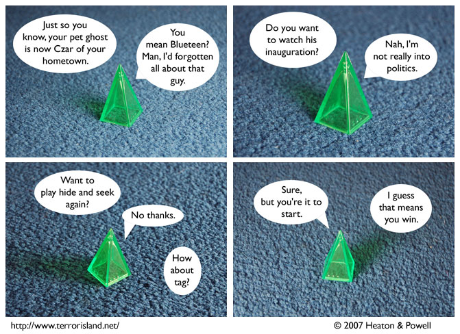

Strip #237
— Monday, December 17, 2007
Aorist is bored with hide and seek because he’s too good at it.
Notes, Thoughts, &c.
Ben’s Notes
If Terror Island used a different font instead of Gill Sans, what would you want it to be? Let us know on the forum. I don’t think there’s a thread for it right now, so you’d have to start one.
Lewis’s Notes
Did you know that our comic can compete with large airlines in terms of delivering service in the face of inclement weather? In fact, not only do we compete, we win, which is why I won’t leave Rochester until Tuesday, after having today’s flight cancelled. Terror Island updates in any weather (except maybe hot hail).